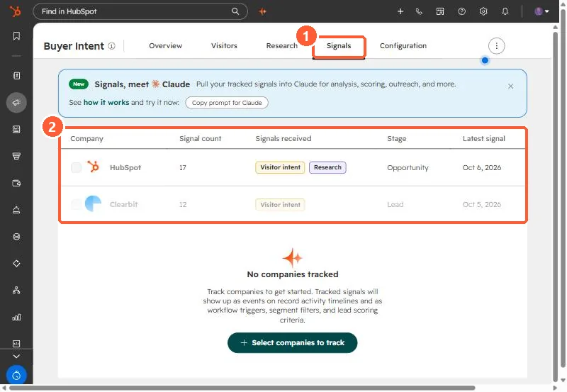

Short answer
Job posts for HubSpot, CRM or RevOps roles tell you a company has the problem now. We built it in HubSpot as a Hiring Signals company property group (seven properties, including a score and posting date), fed it from job board searches, matched and deduplicated companies by domain, and built an active company list for scored companies with a post in the last 90 days. HubSpot's Buyer Intent adds its own signals on tracked companies, which show on the activity timeline and can be used in workflows, segments and lead scoring.
1. Why job posts
For our agency, a company advertising a HubSpot admin or CRM owner role has a HubSpot problem, budget approved for it, and a gap until the hire starts. Those companies were a better outreach list than generic firmographic matches.
2. The HubSpot side
- Properties: a Hiring Signals company property group with seven properties, including the score, matched role, source, posting URL and posting date.
- A note: the source list and scoring model written down in the portal, so the score is explainable.
- A list: an active company list filtered on score and a posting date in the last 90 days. The date filter took several attempts through the Lists API before it was accepted.
3. Feeding it
We generated saved searches across job boards for HubSpot ownership, ops roles and competitor CRMs, pulled results from a jobs API and from company applicant tracking pages, and resolved each posting to a company domain. Deduplicating by domain mattered more than anything else, since one company posts the same role on several boards. We also filtered out staffing agencies posting on behalf of clients.
4. Where HubSpot's Buyer Intent fits
HubSpot's Buyer Intent tool tracks signals on companies you select: visitor intent, research intent, and news signals. HubSpot's KB covers custom signals, intent credits, and how far back custom signals look. Tracked signals appear as events on record timelines and can be used as workflow triggers, segment filters and lead scoring criteria.


Our own job post data stays in our own properties. Buyer Intent adds behavior on top for the same companies.